SIMPLE VIEW OF ATOMIC STRUCTURE
This page revises the simple ideas about atomic structure that you will have come across in an introductory chemistry course (for example, GCSE). You need to be confident about this before you go on to the more difficult ideas about the atom which under-pin A'level chemistry.
THE SUBATOMIC PARTICLES
THE BEHAVIOUR OF PROTONS, NEUTRONS AND ELECTRONS IN ELECTRIC FIELDS
What happens if a beam of each of these particles is passed between two electrically charged plates - one positive and one negative? Opposites will attract.
Protons are positively charged and so would be deflected on a curving path towards the negative plate.
Electrons are negatively charged and so would be deflected on a curving path towards the positive plate.
Neutrons don't have a charge, and so would continue on in a straight line.
Exactly what happens depends on whether the beams of particles enter the electric field with the various particles having the same speeds or the same energies
IF THE PARTICLES HAVE THE SAME ENERGY
If beams of the three sorts of particles, all with the same energy, are passed between two electrically charged plates:
- Protons are deflected on a curved path towards the negative plate.
- Electrons are deflected on a curved path towards the positive plate.
- The amount of deflection is exactly the same in the electron beam as the proton beam if the energies are the same - but, of course, it is in the opposite direction.
- Neutrons continue in a straight line.
If the electric field was strong enough, then the electron and proton beams might curve enough to hit their respective plates.
IF THE PARTICLES HAVE THE SAME SPEED
If beams of the three sorts of particles, all with the same speed, are passed between two electrically charged plates:
- Protons are deflected on a curved path towards the negative plate.
- Electrons are deflected on a curved path towards the positive plate.
- If the electrons and protons are travelling with the same speed, then the lighter electrons are deflected far more strongly than the heavier protons.
- Neutrons continue in a straight line.
If this is on your syllabus, it is important that you should know which version your examiners are going to expect, and they probably won't tell you in the syllabus. You should look in detail at past questions, mark schemes and examiner's reports which you can get from your examiners if you are doing a UK-based syllabus. Information about how to do this is on the syllabuses page. If in doubt, I suggest you use the second (constant speed) version. This actually produces more useful information about both masses and charges than the constant energy version.
THE NUCLEUS
The nucleus is at the centre of the atom and contains the protons and neutrons. Protons and neutrons are collectively known as nucleons.
Virtually all the mass of the atom is concentrated in the nucleus, because the electrons weigh so little.
Working out the numbers of protons and neutrons
No of protons = ATOMIC NUMBER of the atom
The atomic number is also given the more descriptive name of proton number.
No of protons + no of neutrons = MASS NUMBER of the atom
The mass number is also called the nucleon number.
This information can be given simply in the form:
How many protons and neutrons has this atom got?
The atomic number counts the number of protons (9); the mass number counts protons + neutrons (19). If there are 9 protons, there must be 10 neutrons for the total to add up to 19.
The atomic number is tied to the position of the element in the Periodic Table and therefore the number of protons defines what sort of element you are talking about. So if an atom has 8 protons (atomic number = 8), it must be oxygen. If an atom has 12 protons (atomic number = 12), it must be magnesium.
Similarly, every chlorine atom (atomic number = 17) has 17 protons; every uranium atom (atomic number = 92) has 92 protons.
ISOTOPES
The number of neutrons in an atom can vary within small limits. For example, there are three kinds of carbon atom 12C, 13C and 14C. They all have the same number of protons, but the number of neutrons varies.
These different atoms of carbon are called isotopes. The fact that they have varying numbers of neutrons makes no difference whatsoever to the chemical reactions of the carbon.
Isotopes are atoms which have the same atomic number but different mass numbers. They have the same number of protons but different numbers of neutrons.
THE ELECTRONS
Working out the number of electrons
Atoms are electrically neutral, and the positiveness of the protons is balanced by the negativeness of the electrons. It follows that in a neutral atom:
no of electrons = no of protons
So, if an oxygen atom (atomic number = 8) has 8 protons, it must also have 8 electrons; if a chlorine atom (atomic number = 17) has 17 protons, it must also have 17 electrons.
The arrangement of the electrons
The electrons are found at considerable distances from the nucleus in a series of levels called energy levels. Each energy level can only hold a certain number of electrons. The first level (nearest the nucleus) will only hold 2 electrons, the second holds 8, and the third also seems to be full when it has 8 electrons. At GCSE you stop there because the pattern gets more complicated after that.
These levels can be thought of as getting progressively further from the nucleus. Electrons will always go into the lowest possible energy level (nearest the nucleus) - provided there is space.
To work out the electronic arrangement of an atom
- Look up the atomic number in the Periodic Table - making sure that you choose the right number if two numbers are given. The atomic number will always be the smaller one.
- This tells you the number of protons, and hence the number of electrons.
- Arrange the electrons in levels, always filling up an inner level before you go to an outer one.
e.g. to find the electronic arrangement in chlorine
- The Periodic Table gives you the atomic number of 17.
- Therefore there are 17 protons and 17 electrons.
- The arrangement of the electrons will be 2, 8, 7 (i.e. 2 in the first level, 8 in the second, and 7 in the third).
The electronic arrangements of the first 20 elements
After this the pattern alters as you enter the transition series in the Periodic Table.
Two important generalisations
If you look at the patterns in this table:
- The number of electrons in the outer level is the same as the group number. (Except with helium which has only 2 electrons. The noble gases are also usually called group 0 - not group 8.) This pattern extends throughout the Periodic Table for the main groups (i.e. not including the transition elements).
- So if you know that barium is in group 2, it has 2 electrons in its outer level; iodine (group 7) has 7 electrons in its outer level; lead (group 4) has 4 electrons in its outer level.
- Noble gases have full outer levels. This generalisation will need modifying for A'level purposes.
Dots-and-crosses diagrams
In any introductory chemistry course you will have come across the electronic structures of hydrogen and carbon, for example, drawn as:
The circles show energy levels - representing increasing distances from the nucleus. You could straighten the circles out and draw the electronic structure as a simple energy diagram.
Carbon, for example, would look like this:
Thinking of the arrangement of the electrons in this way makes a useful bridge to the A'level view.